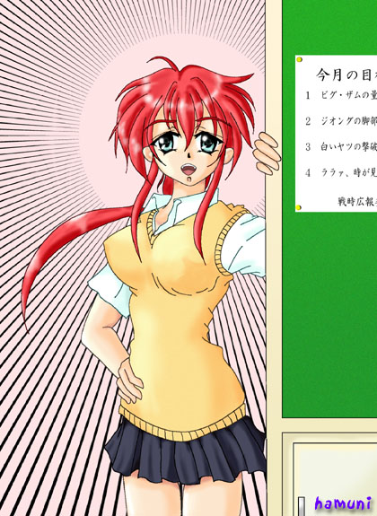
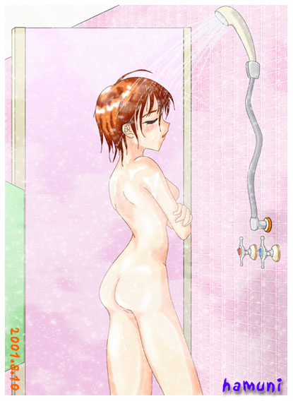

天使のお仕事・異伝
知らないって事は幸福だね♪
本文・夕暮稀人＆挿絵・ｈａｍｕｎｉ
１ 覗きの遺伝子、胎動す
伊織達の通う高校。
一見、どこにでもありそうな普通の高校である。
しかし、その校舎の一室で謎の会合が、定期的に開かれていることを知る人間は少ない。
放課後になり、部活動も終わって生徒達が殆ど帰宅したその教室に、彼らはいた。
月明かりが優しく照らし出す彼らの表情は真剣その物だ。
そう！
彼らこそ、この学校で知る人ぞ知る『秘密結社・覗き軍団』なのであるっ！！
知らない人は知らないけど。
というか、ほとんどの生徒は知らない。
□ □ □
「本日、皆に集まって貰ったのは言うまでもない、あの事についてだ」
「というと、元帥閣下。アレですね？」
「そう、我等が唯一覗きに成功していない、彼女についてだ」
「早川………伊織、ですね？」
「その通りだ、参謀総長」
「そりゃあ、転校してきたばかりだからな…………」
「しかし、中将。美少女転校生というオプションを差し引いても、人気ありますからね、ウチのクラスの伊織ちゃんは。覗き写真の一つくらい撮っておかないと我々の沽券に関わる重要問題です」
「大尉の言う通りだ。我々は早急に彼女の覗きを敢行しなければならない。だが、古代の『あぁと・おぶ・うぉお』曰く、敵を知り己を知らば、すなわち百戦危うからずという。参謀総長！」
元帥と呼ばれた男は、指を組ながら椅子に深く腰掛け直し参謀総長の方をみる。
「はっ！ 諜報部の入手した情報によると、推定で、身長１５７cm、３サイズが上から８１・５７・８０のＢカップ。両親は共にカナダに転勤になったため日本にはおらず、親戚である同じクラスの早川真織の家に預けられているようです。性格は、まぁ………ボーイッシュと言ったところですが、時折見せる女の子らしいところが堪らないという男子生徒が多数、と言ったところです」
「？ その推定ってのはなんだ？」
「はい。彼女は転校して来てまもないので、身体測定などの公式記録は学校のデータには登録されていなかったとのことで、盗み撮りした彼女の写真を元に、専門家の鑑定の結果、概算を出したものです。実際はそれ以上ともそれ以下とも言えますが、彼女が極端に着やせ、もしくは着ぶとりしない体質ではない限り、誤差数センチと言ったところでしょう」
「…………専門家？」
「少佐か。２年のＦ本とだけ言っておこうか」
正体はバレバレだとは思うが、えらい専門家もいたものである。
「しかし、正確なデータを調べることができんとは、諜報部の奴らは兎の飼育係もつとまらんような無能者ぞろいだ」
「閣下！ それは少し言い過ぎではありませんか。彼らはこのために危険を冒してまで隠し撮りやストーキングに近い行為などを行ったのです。その彼らに対して、それは酷というものでしょう。訂正をお願いします」
諜報部の苦労を知る石原大佐の言葉に、元帥は笑うと、息を吸い込んで言い放った。
「そうか！ 彼らはまさに兎の飼育係に打って付けである！」
「それを聞けば、諜報部の者達も光栄に思うことでしょう」
興味なさそうに、参謀総長が相づちを打つ。
「兎の飼育係って何だよ………」
どこかで聞いたことのあるようなセリフに、彼等の中の一人が、ぼそっと呟いたその言葉は、おそらくそこに集まった全員の総意であった。
「まぁ、彼女の正確な３サイズは作戦が成功した暁にははっきりするでしょう」
「ううむ。楽しみはそれまでお預けと言うことか。仕方あるまい」
「はい、それでは作戦の説明に移ります。第一次作戦は、明日。彼女のクラスの体育の終了時間、明石標準時ヒトフタマフタマル（１２２０）をもって敢行。場所は女子更衣室。作戦は『竹』が上策であると判断いたしました」
「まてっ、参謀総長っ！ 何故、体育の前の着替えを狙わん！ 体育の前なら彼女たちの成長を確認しあう『すきんしっぷ』を『ふぁいんだぁ』に収める絶好のチャンスではないかっ！ 浪漫ではないかっ！」
厳つい顔をした男が、机をドンッと叩き反論する。
「はい、中将。我々もそれを検討しましたが、万が一の作戦失敗時における撤退行動のことを考えると、体育の後の方が都合がいいのです」
しれっと応えながら、参謀総長が眼鏡を吊り上げる。
「体育で疲れるも何も、我々が撤退に失敗するほどの体力を持つ女子など…………」
「彼女のクラスに、あの笹島瑞樹がいたとしても？」
参謀総長の眼鏡がキラリと光る。
「なにっ！ あの通常の女子生徒の５倍のエネルギーゲインがあるという、あの笹島かッ！ ………ううむ、それなら仕方がないのかもしれんな」
………瑞樹もえらい言われようである。それでは新型の白いヤツだ。
「よし、決まったところで各々、作戦の準備に移れ！ なお、この作戦は只今を持って『更衣室攻略作戦』と命名呼称する！」
「覗きは漢の『ふぁんたじぃ』！」
「「「「「覗かれてこそ、美しくアレ！！」」」」」
「我等は浪漫の求道者！」
「「「「「来るべき、覗きの明日のために！！」」」」」
掛け声をあげた彼等の情熱は飽くことが無く、作戦の準備は着々と進められてゆく。
歪んだ情熱ではあるが、それを指摘する人間は、残念ながらその場にはいなかった。
２ 瑞樹、大地でこける
『更衣室攻略作戦』の決行日。
校舎の２階にある更衣室で伊織達は、廊下や窓の外に待機した黒い影に気付くことなく戯れながら（もしくは真織や瑞樹の玩具にされながら）着替えている。
その嬌声に、鼻の下を５ｃｍくらい伸ばしていた黒い影達であったが、やがて頷きあうと一斉に作戦に取りかかった。
危うしっ！ 伊織っ！ このまま、覗き写真が彼等の秘密ファイルに収められてしまうのか？ そして、お子さまには言えない使用目的の手段にされてしまうのか！？
事前の諜報部の調査によると、体育の内容は持久走であるらしく（体育の内容ぐらい、教室から窓の外を見れば一発で分かりそうなものではあるが）、作戦の成功は彼等の歴戦の手腕に掛かれば成功は疑いなかった。
□ □ □
最初に動き出したのは、『覗き公国』でも若手の１年・軽間大佐であった。彼は身体にロープをくくりつけ、屋上から降りて覗くという得意の空中作戦は、コレまで多くの女生徒の覗き写真を撮ってきた若手のホープである。
ただ、欠点はといえばその姿を周りから見ればマヌケ以外の何ものでも無いと言うことぐらいだろうか。
彼は巧みなブロックサインで、屋上に控えた仲間達にロープの長さや位置を指示しながら、ゆっくりと、ゆっくりと更衣室の窓に近づいてゆく。
そして、更衣室のカーテンの隙間にカメラのレンズを向けて被写体である伊織を捜しあて、ゆっくりとシャッターを押し込もうとした、
その瞬間！
カーテンが勢いよく広げられ女生徒がドアを開ける！
「あ〜、いい風♪ こんな閉め切った部屋で着替えてたら、体が蒸れちゃうよっ！」
「だからって、窓全開にしないでよ。誰か覗いてたら見られちゃうよぉ〜！」
「伊織ちゃん♪ 大丈夫〜。知らないだろうけど、この先は校舎も何もないから、見られる心配はないのよっ。んん〜？ それとも伊織ちゃん、誰かに見て貰いたいのかな〜？」
「それなら、私が伊織ちゃんの立派に成長した胸をみてあげるわよ〜」
「じゃあ、私は揉んであげるっ！」
「いやああ、やめてよぉ〜」
「伊織ちゃんじゃないけど、とりあえず、カーテンぐらい閉めておくよ〜」
ヘアクリップを付けた伊織は、クラス中の玩具になっていた。
「く、くそう………。今こそ絶好のシャッターチャンスだというのにっ！ 軽間のヤツ………」
「…………アレでは、空中と言うよりイモリやカメレオンだな」
近くに茂みに身を隠した彼等の視線の先で、爬虫類よろしく窓のすぐ上の壁にへばりついて冷汗を流している軽間の姿があった。
そして、彼が再度覗きにチャレンジしようとしたとき。ブチリと言う鈍い音と共に彼を支えていたロープが切れ、地球の引力にひかれたまま落下する。
痛そうである。
□ □ □
その様を遠くから見ていた男がいた。
『赤い彗星』こと、四谷少佐である。
彼こそが、ナイフで軽間のロープに切り目を入れた張本人である。
四谷は、
「坊やだからさ」
と、意味不明のことを呟いて、ニヤリと笑う。
「恨むなら、この間のテストで私よりイイ順番を取った自分を恨むんだな」
……………早い話、逆恨みであった。
□ □ □
素早く軽間を回収し終えた彼等は、ニヤリと笑う。
「やはり俺達がやらねぇと、な」
「軽間では荷が重かったということだ」
「なぁに、我等『黒い３連星』に掛かれば、伊織ちゃんの覗き写真など、チョロいもんだぜ」
ガクランを来ているのだから黒いのは確かであるが………。どうでも良い話、それを言うなら男子生徒は全員黒い。
「ああ、だが油断は禁物だ。あの乱場大尉と葉門先輩も相手を侮って、破れたのだからな」
「確か相手は、笹島瑞樹だったか？ あそこにはヤツもいる。舐めてかかれば、先輩達のように停学処分だ。いくぞ、ジェットストリームアタックだ！」
「「了解ッ！！」」
「じ、自分を踏み台にぃ！？」
早ッ！！
まぁ、彼等は高いところにある場所でも、残り二人を踏み台にして覗きを決行する正統派の覗き屋であるからして、その前提として誰かが必ず踏み台になってしまうのだが、なぜか彼等はそのセリフを言うためだけに、覗きをやっている気がしてならない。
ともあれ、大胆にして機敏に覗きをこなす歴戦の勇士である。噂によれば、『教室（るうむ）戦役』では美人教師の麗瓶先生の覗きを成功させたという。他にも覗き写真を撮られた女子生徒は十指に余るという。
しかし、彼等のジェットストリームアタックには、一つの欠点があった。
その姿を周りから見ればマヌケ以外の何ものでも無いと言うことだった。
まぁ、華麗な覗きというのも想像できないが……………
だが、彼等の快進撃も今日までであった。
彼等が卓越した（？）技術で窓に張り付いた瞬間。
一番下で踏み台になっていた、３連星のウチの一人、摩周の鼻先に蝶が１匹飛んできて彼の鼻先をくすぐる。
しかし、そこはそれ歴戦の勇士である彼は、ギリギリまでくしゃみの誘惑に耐えたが、堪えきれず爆発する。それでも、声を上げなかったのは流石ではあるが………。
そして、崩れ落ちる。
痛そうである。
□ □ □
その後も、位置取りの素晴らしさから通常の３倍の時間、覗きを続けられると言われた覗きの迅雷とよばれた土奈比中尉や、その他大勢による波状攻撃もあえなく失敗した。
それでも、相手に気取られないのは流石ではあるが、残ったのは赤い彗星と呼ばれた２年の四谷少佐だけであった。彼は、その逃げ足が通常の３倍あると呼ばれ、『教室（るうむ）戦役』では、鼻血を流しながら逃げた様が赤い彗星に見えたところから、その二つ名で呼ばれるようになった剛の者である。
彼は巧みな身のこなしで、廊下側から更衣室に近寄るとおもむろに変装道具を取り出す。
ボイスチェンジャー機能付きの白い鉄仮面と赤いコスプレ。まるで某アニメの（続編では味方になったりと忙しいことこの上ない）敵役だが、それが彼の趣味なので誰も突っ込みは入れなかった。いや、入れたかったのかもしれなかったが、陰湿な仕返しが怖いので止めておいた。
一撃離脱。コレが彼の撮る作戦である。
その為の仮面であり、その為の逃げ足である。陸上部の次期部長である。
そして、一気に更衣室の扉まで肉薄すると、手慣れた仕草で開錠する。その手際たるや将来、空き巣に困らないだろう事は想像に難くない。
扉を開け放ち、写真を撮ろうとすると、そこには仁王立ちになった瑞樹の姿があった。
ちなみに女子生徒の殆どは、既に着替えは終えている。
「なにっ！ 着替え終わってるなんて聞いていないぞ。ま、まさか『にぅたいぷ』か！（ボイスチェンジャー済）」
「覗き魔が、何してんだ？」
「ははははは…………。覗き魔が更衣室前でやることといったら一つじゃないか（ボイスチェンジャー済）」
当たり前のことを聞く質問に、当たり前の事を答える四谷。しばらくの沈黙の後、女生徒達が悲鳴を上げる。
その喧噪をＢＧＭに、瑞樹はこめかみをヒクつかせたまま仮面男に掴みかかろうとする。
「捕まえて、仮面を剥いでやるぜ！」
「そうはいかん、撤収っ！（ボイスチェンジャー済）」
「はっ、早い！ つーか、この足音の数………１０人くらいはいるんじゃ？」
風を巻き上げながら仮面男はものすごい早さで逃げてゆく。
仮面男を追いかけて直ぐに走り始めた瑞樹は、すぐに足に抵抗を感じて…………こけた。
そこには、足の脛の辺りまでの高さに張られたロープが張られていた。
赤い彗星………用意周到である。というかセコい。
瑞樹が顔を上げた時、そこに彼の姿は既になかった
「…………………父さんにも覗かれたこと無かったのに」
瑞樹は、ボソリと呟くが、実の娘の成長を覗く親というのは統計学的にも少数だろう。
３ めぐり会い保健室
伊織達の通う高校。
一見、どこにでもありそうな普通の高校である。
しかし、その校舎の一室で謎の会合が、定期的に開かれていることを知る人間は少ない。
放課後になり、部活動も終わって生徒達が殆ど帰宅したその教室に、性懲りもなく彼らはいた。
月明かりが優しく照らし出す彼らの表情は真剣その物だ。
「不甲斐ない…………」
「まったくだぜ、揃いも揃って失敗とはな」
「閣下。取りあえず彼等の処遇はいかが致しましょうか？」
「う〜ん。取りあえず、全員２等兵降格！」
「ええ〜。そりゃ無いですよぉ…………」
情けない声を出した彼等に、厳めしい顔つきをした男が、いや『漢』が吠えた。
「ええい、情けない声を出すなっ！ 覗きに失敗するというのはノゾキストに常に付きまとう宿命とはいえ、全員が失敗するなど言語道断！ 信賞必罰は組織には必要なのだ！」
ノゾキストって何？
全員が、もっともらしく吠える漢の方を見て、げんなりとした顔をする。
ちなみに、この漢。通称『土鶴中将』という。
どうでも良いけど。
「まぁ、中将。その事は既に決定事項だから気にする必要はない。問題は、我々の精鋭を撃退した、連ゲフッ、の白いゲフッゲフッ、じゃなくて早川伊織をどうするかと言うことだ」
「その通りだ元帥。ここは少し策を考えねぇと、やばいぜ？」
「大丈夫ですよ、中将。既に策は考えてあります」
「なんだ、言ってみろ」
「私も聞きたいな、参謀総長」
「はい。策と言うほどのことではありませんが、彼女が一人になった時を狙って作戦を実行すれば宜しいかと」
「はっ！ 何だと思えば、そんなことか。だが、早川伊織が覗き出来るようなときに一人になることはないと、諜報部が調べ上げたことを知らんわけではあるまいに」
「はい。ですから我々参謀部が、彼女が一人で着替えるように手を打ちます」
「ほう？ 具体的には？」
「はい。調査段階で彼女の身体的情報が、転校生である為に手に入れられなかったことはご存じの通りですが、今回はそれを利用して身体検査時の着替えを狙います。もちろん、この学校の女子で身体検査を受けていない女子生徒は彼女だけですから、彼女を一人きりにして覗くことが可能です」
「しかし、それでは身体測定で成長を確認しあう『すきんしっぷ』という漢の浪漫がっ！」
「中将…………。そのネタは前にやった」
「…………っと失礼。しかし、コレを浪漫と言わずして何を浪漫といえようか！」
「中将閣下の言いたいことももっともですが、ここは作戦の成功を第一に考えるべきだと思います」
「しかし、そこまで大がかりだと、我々の力では無理があるのではないか？ 第一、身体測定と言えば学校行事…………」
「元帥閣下の心配ももっともです。ですが、わが『覗き公国』の協力者には、校長室と保健室の責任者が居ます故。協力を取り付けるのは容易いことかと？」
「………参謀総長、素直に校長と保険医と言えば良いだろう？」
「まぁ、有り体に言ってしまえば、その通りです」
「しかし、よく協力者に出来たな」
「はい。転校していった総統閣下より受け継いだ人脈です」
「あの総統閣下の？ ううむ、それならば…………」
「では、作戦は実行可能なのだな？」
「はい。明後日の放課後、保健室、明石標準時ヒトロクヒトゴ（１６１５）をもって作戦を実施したいと思います」
「良かろう。その作戦の実施を許可する。作戦指揮は、中将、キミが行いたまえ。人員は今日の作戦に失敗しなかった者達で行う。数は少ないがやってくれるな？」
「閣下！ 覗きは数だぜ？ ………といっても、失敗者を使うのも士気に関わるか。任せてくれ、何とかやってみよう」
「くれぐれも作戦の遂行を第一としてくれ。都合が付けば援軍も出す」
「おう、当てにしてるぜ！」
「では、この作戦は只今を持って『独門（そろもん）作戦』と命名呼称する！」
「……………………なんで、『独門』なんですか、閣下？」
「……………………保健室には入り口が一つしかないから」
「……………………それだけ？」
「それだけ」
「「「「「はぁ〜〜〜〜〜〜」」」」」
辺り一面、溜息の海だった。
「ま、まぁ、取りあえず………いつものヤツやりますか」
「そ、そうだな…………」
元帥は咳払いをして気を取りなおす。
「覗きは漢の『ふぁんたじぃ』！」
「「「「「覗かれてこそ、美しくアレ！！」」」」」
「我等は浪漫の求道者！」
「「「「「来るべき、覗きの明日のために！！」」」」」
永遠に来るな、そんな明日。
覗かれた女子生徒なら、確実にそう思うことだろう。
□ □ □
『独門（そろもん）作戦』の決行日。
何も知らない伊織は、担任の教師に言われて保健室に来ている。
知らないって事は幸せだ。
「おっ、早川か？ そこにカーテンで区切ってあるところあるから、そこで服を脱ぎな。っと、鍵は閉めとくからな。覗き対策もしとかんとな」
愛用している（火を付けていない）『らくだ』煙草をくわえながらそう言ったのは、外国生活が長かったと言われる、長髪・眼鏡の知的で落ち着いた感じの美人保健医だった。
伊織（男）も怪我の時など、何度かお世話になったことがある、ぶっきらぼうな物言いが魅力的な大人の女性である。
保健医のタイトなスカートと白衣に、少々マニアックなトキメキを感じながら、伊織は言われるままに、そこに向かう。
先程まで廊下周辺に来ていた、一般（？）の覗き志願者は、既に保健医によって粗方排除されていた。
「フフフ、来よったわ、来よったわ。何も知らずに………。覗かれるとも知らずに」
覗かれると知って、着替える来るような酔狂な人間は、この世の中に数えるほどしか居ないだろう。
そんなことを呟きつつ、土鶴中将は着替えように区切られた保健室に、これ以上ないくらいの巨体を、これ以上ないくらい不自然に置かれた段ボールの中に身を隠して、機会を窺っていた。
一見バレバレの彼の隠蔽術も、しかし、『教室（るうむ）戦役』以来、今日に至るまで一度も露見したことのない見事な物であった。
怪しすぎて、誰にも怪しませないという彼の戦術の賜物である。
彼は『覗き公国』の中にあって、古株と言うこともあるが、その撃墜数（被覗き女生徒数）に置いては、ベスト５に常に入っている。
世の中って、ふ・し・ぎ♪
他の場所にも、雷電少佐・芽籐少佐・刷礼賀中尉・待永中尉、などの精鋭がそれぞれ思い思いの所に身を隠し、伊織の着替えシーンを狙っていた。
よくよく考えたら、えらい人口密度である。
それでも気が付かない伊織がすごいのか、それを気付かせない彼等がすごいのか、意見の分かれるところである。
誰が意見を出すかは知らないけど。
ターゲットである伊織が服を脱ぎ始めると、精鋭達は神経を集中して、『ふぉとじぇにっく』を待つ。
（この無音式カメラが量産された暁には、全ての女性をぉっ………！）
（この『紅い稲妻』の名に掛けて………くれぐれも、じっちゃんの名には掛けないぞ）
（うおおぉ！ 空飛ぶカレーパンが、襲ってくる！！）注：悪夢を見てます
（悲しいけどコレ、軽犯罪なのよね……………）
（我が親友、土鶴よ。この『白狼』…………）注：スマン、セリフが思い浮かばない
一枚一枚、制服を脱いでゆく伊織が、時々自分の身体で遊んでみたり、恥ずかしがったり、よくよく考えると少し異様な光景が続いたが、もちろんその光景に、漢の浪漫バリバリに感じてしまっている彼等にそれを感じるはずもなく…………
そして、ついに運命の時は来た！
伊織がスカートに手を掛け、一気にそれを降ろす。
歴戦の精鋭達はその瞬間を逃すまいと、カメラに掛けた手に自然と力が籠もり、シャッターを押し込む。
その時ッ……………！
偶然か？ 伊織の呼んだ奇跡か？ 見物を決め込んでいたパラレルのお助けか？ 保健室のカーテン越しから軽快な爆発音が響き、伊織は一瞬にして閃光と煙幕に包まれる。
「ゲホ、ゲホ………。な、なんだこれ？ 先生、どうしたんですかっ！」
慌ててカーテンを空けた伊織は、そこで遮光ゴーグルとガスマスクを付けた保健医の姿を発見した。
「え？ あはははは…………。いや、早川が着替えるまで暇だったから外国の友人から送られてきた、閃光グレネードと煙幕弾の実験をば少し………………」
「そ、ソンナコトしないで下さいっ！！ 第一、どうしてそんな物がここにあるんですか！？」
「密輸した」
保健医は真顔で、簡潔かつ明瞭な解答を帰してきた。
「じゅ、銃刀法違反じゃないですか！？」
「安心しろ。どちらかというと爆発物取締法違反だ。最近は銃器の密輸はやっとらん」
「安心できますかっ！（つーか、前はやっとったんかい！！）」
「何故だ？ 全て非致死性の物ばかりだぞ？ まぁ、煙幕弾は麻痺毒を少々混入…………あっ、しまった。でも………………まぁ、いいか」
保健医は、カーテンの向こうでえらい事になっているだろう彼等に向かって、心の中で手を合わせて謝る。が、気にしないことにしたらしい。
「先生………。いつか捕まりますよ？」
「なぁに、早川が口を割らなければ済むことだ。なぁ、早川は先生を売るようなヒトデナシじゃないよなぁ♪」
ズズズッと近寄って来た保健医は伊織の肩に優しく右手を回すと、その口元を伊織の耳にそっと近づけて囁く。腕に当たる柔らかい胸の感触と髪のシャンプーの薫りが生々しい。
本来ならば、耳元に当たる吐息や胸の感触が、ドッキドキの展開なのだが……………この場合『蛇に睨まれた蛙』という心境の方が正しい。
伊織は、蒼白な顔でブンブンブンッと音が出るくらい大きく首を振った。
その様子を見た保健医は、クスリと微笑むと伊織を解放する。
「うん、素直な子は好きだぞ。一瞬、早川の家に正体不明の小包を送るか、素敵なクスリ漬けにして自我を崩壊させないといけないのかと、ヒヤリとしたよ」
伊織には、前の彼を含め多くの男子生徒が憧れている保健医のその笑顔が、今日ほど怖いと思ったことはなかった。
「は、ははははははは……………………」
「そうだ。良い子の早川に先生が何かこのお守りをプレゼントしよう。どうしようもなく疲れたときにコレを開けると、疲れが吹っ飛ぶぞ♪」
「な、何が入ってるんですか？」
「まぁ、疲れが吹っ飛ぶ素敵な白い粉とだけ言っておこうか。だた、空港に行くときは犬に気を付けろよ」
「い、いりませんっ！！」
「早川………………、まさか人のプレゼントを断ったり、隠れて捨てることはしないだろうな………………。そんな事をする悪い子は…………分かってるな？」
あなたの方が悪い人です！！ 喉元まで出てきた言葉を、伊織は必死で飲み込んで、ただ恐怖から頷く他なかった。
「まぁ、それはともかく。さっさと身体測定の方、済ませてしまうか？」
メジャーを手に保健医が妖しく微笑む。
「あっ、でも先生………。まだブルマが………」
「誰が見てるわけでもあるまい？ 気にするな」
「で、でも…………お友達に噂されると恥ずかしいし………」
「お前は、初代・赤毛のボスキャラか？」
あのボスキャラを攻略しようとして、涙を流した勇者は数多い。
「あははははは……………。よろしくお願いします」
伊織は観念した。
「おっ、それにしても早川。結構育ってるな、感心、感心！」
「ふみゅっ！ ………って、い、吐息が、く、首筋に…………ぃ」
「ふみふみ。弾力も結構あるな……………」
「ああっん。って、マジメに………んッ！」
「ほぉ？ ここが良いのか、ん？」
「み、耳たぶ、噛んじゃ…………やぁ………」
（以下、特高により検閲抹消）
保健医が、身体検査にかこつけて自分の趣味を満足させ続けたその頃、
（玩具にして遊んでいるとも言うが）
カーテンの向こうの精鋭達は…………………
（（（（（ぬおおぉぉおおおお！ 痺れて動けん……………！！）））））
痺れていた。

４ 遠い場所から来た女神
伊織達の通う高校。
一見、どこにでもありそうな普通の高校である。
しかし、その校舎の一室で謎の会合が、定期的に開かれていることを知る人間は少ない。
放課後になり、部活動も終わって生徒達が殆ど帰宅したその教室に、性懲りもなく彼らはいた。
月明かりが優しく照らし出す彼らの表情は真剣その物だ。
………………いい加減、しつこいモノローグである。
「不甲斐ない…………」
「すまねぇ…………………。元帥の言っていた援軍さえ来れば何とかなったかもしれないんだが…………………」
「援軍のことか、手配したハズなんだが？ 参謀総長、どうなっているんだ」
元帥の言葉に、集まった者達の一部がビクッと肩を竦ませる。
「はい。残念ながら彼等は全員、居残り補習に捕まったようです」
「………………貴卿らは無能か？」
「………………無能と言うより、馬鹿です」
「まぁ、それはともかく……………補習組を含めて、全員降格な」
「二等兵にですか？」
「いや、ロボット三等兵」
「……………………………………………………………」
「閣下、それは置いておくとしましょう。問題は、前二回の作戦で彼女の覗き写真を撮ることが出来なかったと言うことです」
「し、しかし、『独門（そろもん）作戦』では、保健医の失策さえなければ、成功していたのですぞ、元帥閣下っ！」
「協力者に、作戦を左右する役割を任せること自体が問題であるとは思わんのか？」
「しかし、いかが致しましょう？ 我等が精鋭の殆どがコレまでに失敗を重ねております。この中で、作戦に直接、関わっていないのは、閣下と私だけですが…………それでは数が足りません」
「問題は、数だけじゃあねぇだろう？」
「はい、残念ですが……………。『更衣室攻略作戦』の失敗によって、特に一部の人間が正体を見破られないまでも姿を見られた為に、更衣室の防衛が強化されており、しばらく更衣室への作戦は事実上不可能な状態になっております」
「手駒が足りない上に、向の防衛まで強化されてしまっては………………、我等は敗北を認めねばならぬのか？」
「しかしっ！ それでは漢の浪漫が全うできんではないかぁ！」
血を吐くような声だった。
何もそこまで真剣にならなくても、と普通の人間なら思うのだが、覗きに命を懸けている彼等にとって、土鶴の魂の叫びは、まさに自分達の叫びを代弁した物だった。
至る所で、忍び泣きを漏らす声が聞こえてくる。
教室の中、しばらくその状態が続いたが、やがてただ一人、泣きもせずにジッと眼を閉じ何かを考え込んでいた元帥は、やがてカッと瞳を開けると、苦渋に満ちた声を出していった。
「……………………ここは、耐エ難キヲ耐エ、忍ビ難キヲ忍ビ…………」
オリジナリティーを感じさせない言葉だ。
だが、感極まっている彼等は突っ込むことなく、項垂れたままその言葉を聞いていた。
その時、教室の扉の所から鈴のような声が響いた。
「義連（よしつら）くん！ 漢の『ふぁんたじぃ』をこのくらいで諦めちゃっても良いの！？」
一瞬。彼等はそこに、少々癖っ毛の、しかし確かに後光の差す巨乳の女神の姿を見た。
彼等の目の前に現れた女神は、隣町の白華女学院の制服を着て、優しく微笑んだ。
「あ、あなたは…………っ！」
「そ、総統閣下ッ！」

□ □ □
放課後になり、部活動も終わって生徒達が殆ど帰宅したその教室に、ミルクティーは余りにも不似合いだ。
優雅な仕草で、カップ（どこにあったんだ、そんな物？）を傾ける姿に見とれる面々だったが、その表情に共通した感情は『疑問』であった。
ミルクティーを飲んでいる彼女の、組まれた足の奥に覗くレースの付いた白いアレを、必死に覗こうとしている連中（プロ意識というか、何というか………）に、見える見えないのギリギリの位置を保ったまま表情を崩しもしない、むしろ楽しんでいる所からも、ただ者ではないことが分かる。
彼等の記憶にある総統は、間違いなく男性その物であった。
どう考えてみても、目の前の美少女と、記憶の中にある『覗き公国』を創設した偉大な総統の姿をダブらせることが出来なかった。
彼等の記憶にある総統は、外見的には背が高く知性的な優男で、しかもその内面は、覗きに対する飽くなき情熱に溢れた尊敬すべき『漢』であった。
元帥と参謀総長だけは、事情を知っているらしく、疑問には思っていないようだった。
「総統閣下……………。転校なされたはずの貴方が、なぜ？」
「待って下さい、総統ッ！ こ、この人が総統閣下とはどう言うことですか！？ 私にはとうてい理解できないのですが……………」
堪らず声を上げたのは、我藤元・少佐（現・ロボット三等兵）であった。
我藤の言葉に、居並ぶ者達は彼女を（特に胸のあたりを）凝視しながら一斉に頷く。
「まぁ、お前達が戸惑うのも無理ないだろう。総統閣下の転校の理由は、第一級の機密事項だからな……………」
「と、言いますと？」
「ああ、総統閣下は『覗き』を心身共に極めたために、ついには身体が女性化してしまったのだっ！」
「「「「「んな馬鹿なっ！！」」」」」
突っ込みの声が、見事にハモる。
その様子を気楽そうに眺めていた少女は、軽い調子で笑いながら手をパタパタ振って彼等に応える。
「ホント、ホント！ なんか、急にボクの身体が痛くなって、高熱で一週間ほどうなされてたら、こんな身体になっちゃたのよ。…………………いっそ殺してくれって叫び続けたくらい痛かったけど♪」
怖ろしいことをサラリという人だ。
「そ、そんなデタラメな…………………………」
「遺伝子って『ふぁんたじぃ』だね♪」
『ふぁんたじぃ』で済まされる問題ではない。少女の主治医はもっともらしい理由を付け誤魔化すように『人体の神秘』と言っていたが、言ってることは大差ない。
「女性化してしまったから転校した、ということですか」
「それもあったけどね。でも、ホントはこの学校の女生徒・女性教諭の覗きは全て達成しちゃったから……………。いいわよぉ、女の子の身体は〜、正面から堂々と覗き放題♪」
「それは覗きと言わないのでは………………？」
ニッコリと微笑む総統に、疲れた顔で参謀総長が突っ込む。
「そうとも言うわね」
あっさりと認める総統。
「しかし…………、覗きを極めて女性化するなど、信じられん……………」
「世界は『ふぁんたじぃ』に溢れているのよ、土鶴クン。ボクも最初は信じられなかったけど…………、現実は受け止めなきゃね♪」
「そ、その口癖は確かに総統閣下の物だが……………………」
その口調はすっかり女性の物に馴染んでしまっている。
「そう言えば、中等部にいる土鶴クンの妹。美祢葉ちゃんだっけ？ 可愛いわね〜、土鶴クンの妹だなんて、名字を聞かなきゃ分からなかったわ♪」
「う゛っ……………。ま、まさか？ 美祢葉が言っていた、『すっごくカッコイイお姉さま♪』とは………」
「うん、私っ♪」
ちなみにコレが美祢葉ちゃんよ。と、総帥が美祢葉の写真を見せびらかす。
「……………これが土鶴ロボット３等兵のいもうとっ！？」
「……………とても、同じ親から生まれたとは思えん」
「焼き増し！ 焼き増しだっ！！」
その写真を見た一同は、思わず「遺伝子って『ふぁんたじぃ』」と呻いてしまう。
「こんなカワイイ妹が居ることを、何故黙ったいたの？」
「こいつらの反応を見て、何も思いませんか？」
「ボクだったら絶対言わないわね」
「分かっててやったんでしょうが……………」
「うん♪」
がっくりと肩を落とす土鶴。厳めしい顔の男が肩を落とす姿は、見ていて鬱陶しい。
「所で総統閣下。今日、ここにいらしたのはいかなるご用件で？」
「それよっ！」
ビシッ！ と義連に指を突きつけた総統は、たった今思いだしたかのように会話を勧め始めた。と言うより、やっと動き出した…………（ハァ）
「あなた達、転校生の女の子を覗くのに２回も失敗して、もうチャンスがないからって落ち込んでたんでしょ？」
「な、何故それを！？」
「通りがかりの天使様とお供の黒猫ちゃんが、ボクに教えてくれたんだ。彼等を救ってあげてくださいましね〜、って♪」
えらく、胡散臭い話である。
というか、こんな所に出張していて良いのか、パラレル？
それにしても、普通の人間には姿さえ見えないパラレルを見ることが出来るとは、この総統はただ者ではない。これぞ『ふぁんたじぃ』であろう。
「しかし、総統閣下の御力を持ってしても…………これ以上は」
「何言ってるのよ、一つあるじゃない♪ 警戒の薄い覗きポイントが」
総統の意味ありげな言葉に、ハッと何かに気付いたように元帥が顔を上げる。
「しっ、しかしあそこはっ！！」
「そう。その覗きの難しさは難攻不落のイゼルローン要塞以上と言われ、最近覗きが成功したのは５年前の『覗き同盟』の楊上利先輩と『覗き帝國』の線遙人先輩の合同作戦だけと言われるあそこよ」
「伝説の『シャワー室攻略戦』………………」
「そう、白華で覗きした時に分かったんだけど、女子校の覗きって外部にだけ警戒しているから内部には油断だらけで、結構楽なのよ。シャワー室の場合、ここ５年ほど覗かれてないから、必ず油断が出るわ。その油断にボク達がつけ込むってわけ。ちょっと骨だけど、覗きがばれやすい所に人が近づかないようにすれば、十分勝機はあるわ♪」
「いけそうか、参謀総長？」
そう尋ねた元帥の瞳には、失われていた生気が戻ってきていた。
「それなら、事前調査と作戦立案に２・３日も掛ければ、何とかなるかもしれません。それでも、成功確率は五分五分でしょうが…………」
「でも、ゼロじゃない。そうでしょ、参謀総長？」
「はい！ 今度こそ成功させて見せます」
「うん。それでこそ男の子♪ 作戦決行の日にはボクも学校サボって参加するからね、総力戦よ！」
「はっ！！」
「それじゃあ、義連くん。大事な作戦まえだから、みんなに例の演説きかせてやって」
「ええ、もちろんです。皇国ノ荒廃コノ一戦ニアリ、総員……………」
「ちっが〜う！ お前は、磯録かっ！ Ｚ旗かっ！」
総帥は、どこからか取り出したハリセンで、思いっきり元帥の頭に突っ込みを入れた。
「ははは………、つい。では『立て勇者達よ！ 女生徒達は、われら『覗き公国』に覗かれて初めて美しくなれるのだ！ ジーク、覗きっ！』」
「「「「「ジーク、覗きっ！！」」」」」
「「「「「ジーク、覗きっ！！」」」」」
「「「「「ジーク、覗きっ！！」」」」」
「「「「「ジーク、覗きっ！！」」」」」
感涙を流しながら、唱和する野郎達。
ああ、鬱陶しい。
５ 決戦
人気のない校舎裏。
「ついに最終決戦の時が来たわね…………。みんな、覚悟はイイ？」
白華の制服を着たまま学校をサボってきた総統は、控えている精鋭達に声を掛けた。
「この期に及んで尻込みするような者は、この場にはおりません」
「うん♪ じゃあ、参謀総長。ボクたちに作戦を説明して」
「はい。今回の作戦では覗きポイントまでの廊下に、防衛拠点を３カ所設置して、他の教師・生徒の接近を妨ぎ覗きの時間を確保します。この位置の配置となる者は、なるべく自然に時間稼ぎをして下さい。また、数人の協力者が標的を単独でシャワー室に向かうように動きますが、時間稼ぎ以上は期待できないでしょう。その間に、撮影部隊はシャワー室の強襲、覗き写真を撮った後、速やかに離脱します。なお、それに要する時間は遅くとも４分以内にして下さい。なお、シャッター音の露見を防ぐため、シャッターを切るのはそれぞれ１回とします」
「なにっ？ それでは『べすとしょっと』が撮れないではないか！ それでは漢の浪漫がっ！」
「はい。作戦の成功のみを主眼に置きます。今回は、浪漫を求めるより、むしろ我々の面子を守るための作戦行動ですから、今までのような各人の独自の覗きスタイルではなく、役割分担を細かく決めた共同作戦を行うことになるでしょう」
「ぬうぅ…………」
「しかたないよ、土鶴クン♪ と、それとみんなに言っておくよ。現時点を持って前２回の作戦での降格を一時的に解除します（呼びにくいから）。この降格の解除が一時的になるのかそうでないかはこの作戦に掛かってると思って、頑張って『ふぁんたじぃ』を求めよ〜♪」
総統が明るく声を掛ける。総統の気楽そうな声で、全員の緊張が少しずつ解きほぐされてゆく。
その様子を総統が満足そうに眺めていると、緊張した面持ちの１年男子生徒が走ってきて元帥の前で口を開く。
「元帥閣下に申し上げます。早川伊織が、友人とシャワー室に向かっている模様です！」
「よし、この時が来たか…………。現時点を持ってこの作戦を『干苺作戦』と命名呼称するっ！」
「よ、義連くん………？ あ、相変わらずだけど………なんで、そのネーミングなの？」
「何となく」
「…………………ま、まぁ、いいわ。じゃ、出撃しよ♪ 義連くん、いつものやつお願い」
「覗きは漢の『ふぁんたじぃ』！」
「「「「「覗かれてこそ、美しくアレ！！」」」」」
「我等は浪漫の求道者！」
「「「「「来るべき、覗きの明日のために！！」」」」」
「よしっ！ 総員出撃ぃ！」
「「「「「イエス・サー！！」」」」」
ともあれ総統を迎え、最後の決戦に彼等の士気は最高に達していた。
□ □ □
「伊織ちゃん、草むしりご苦労さま」
制服に麦わら帽子をかぶった伊織と真織は、疲れたような表情で廊下を歩いていた。
「はぁ………なんだってこんな暑い時期に草むしりなんか」
「それは伊織ちゃんが宿題忘れて来ちゃうからでしょ？」
「でも、確かに宿題やったはずなのに……………。昨日、一緒に宿題やったよね、確か。ちゃんと鞄に入れたハズなんだけどなぁ？」
「伊織ちゃん、そそっかしいから入れたと思いこんじゃったんじゃない？」
実際は、鞄から無断で持ち出されただけである。
「う〜ん、そうかなぁ？ でも、この暑いのに手伝ってくれてありがとう」
「ふふふ、どういたしまして。伊織ちゃんの為だもん、一肌だって二肌だって脱いじゃうわよ…………」
その言葉に、真織が『伊織ちゃんの為なら…………』と呟きつつ、一枚一枚服を脱ぎ出す姿を想像し、思わず上を向いて鼻を押さえ後頭部をトントンと叩いてしまう。
ちなみに想像の中の真織の下着は、ライトグリーンのフリル付きでした。
「？ どうしたの、伊織ちゃん？」
「い、いや、何でも……………………」
「それにしても、汗がびったりして気持ち悪いわね」
首筋と言わず、胸元と言わず、ジットリとまとわりついた汗で、髪やシャツや下着がビットリと身体にまとわりつく不快感は、悲しいまでに伊織に女の子の身体を実感させる。
それだけでなく、伊織は汗ばんだ身体のいつもと違う感触に、舞い上がっていた。
「う、うん（うわ〜、身体中が湿って…………なんか、エッチな感じがする）」
「そんな君たちに朗報だ」
「うわっ！ せ、先生っ！？ 急に現れないで下さいっ！」
伊織と真織は声に驚いて振り返ると、そこに意味もなく神出鬼没な保健医の姿があった。
しかも、何故か木の枝に逆さまにぶら下がっている。
先日の保健室での出来事を思い出してしまった伊織は、恥ずかしさの余り何も言えなくなる。（いったい、何をどこまでされたのだろうか？）
「せ、先生。ここ２階じゃあ？」
「ん？ 早川…………と、真織クンだったな。ここが２階でなかったら、いったい何階だというのだ？」
「そ、そうゆ〜問題じゃ……………（あ〜ん、この人苦手なのに）」
「ではどういう問題なのだ？」
不思議そうな顔で尋ねてくる変人保健医に、真織はどっと疲れるのを感じた。
「え…………っと、そんなトコにいたら、見えますよ…………下着」
「見たいのか？」
「見たくありませんっ！」
「そうか…………残念だな」
「（残念そうだ。すごく残念そうだ）」
ふっと視線を外した保健医を見て、伊織はそう思わざるを得なかった。
「まぁ、それはともかくとしてだ。草むしりをしてくれた君たちのために、シャワー室の使用許可を取って置いたぞ。部活動が終わった連中が入ってくるまでだけどな」
「え、でも………。すぐに帰って家のお風呂に入った方が……………」
「ほう？ 私の好意を無駄にすると？」
「い、いえ。そんなつもりじゃ……………」
「た、タオルを持ってきてないんです。だから、遠慮…………」
「少なくとも、伊織クンは使うよな、シャワー室。タオルなら貸してやる、ホレ」
ニッコリと微笑みながら用意周到にタオルを投げて寄越した保健医の目は、少しも笑っていなかった。
怖かった。すごく…………
伊織は、条件反射のようにカクカクと頷くしかなかった。
「じゃ。じゃあ、お言葉に甘えさせて貰います。ねぇ、伊織ちゃん」
怯える伊織を気の毒に思った真織が、伊織の肩を抱きながら頷くのを見て、保健医は満足そうに頷く。
「よし。じゃあ、二人仲良く行って来い……………と、言いたいところだが、真織クン。古典の牧村が用事があるから、すぐに来いって言っていたぞ。まぁ、４・５分で終わると思うから…………伊織クン、先に一人で使っていろ。寂しいのなら私が一緒に入ってやるぞ？」
「い、いえっ。一人で大丈夫です！」
真織と一緒に入ることも、保健医と一緒に入る（そして遊ばれる）事も、伊織にとっては刺激が大きすぎる。
伊織は、無難に一人で先に入ってる事を選んだ。
（早川さんが来る前に上がってしまえばいいか？）
しかし、これが伊織を覗こうとする集団の策略であることに、伊織は気付くはずもない。
□ □ □
「只今、目標がシャワー室に入りました。コレまでの統計から、目標がシャワーを浴び始めるまで、おおよそ５分です」
「そうか、では３分後に突入を開始する。通信部は、各ポジションに連絡。只今よりシャワー室へのいかなる接近も遅延させよ！」
「了解！」
義連元帥は、ふうと一息ついく。流石に緊張の色は隠せない。
突入班の面々は、それぞれ愛機の手入れに余念がない。
ただ一人気楽に構えているのは、使い捨てカメラを持参してきた総統だけで、なんでも愛機のカメラは格安で親戚に貸し出し中とのことだ。
そして、永遠のように長く感じられた三分が経つ。
「よし。総員、シャワー室に吶喊〜んっ！！」
「オオウッ！！ ＮＯＺＯＫＩに栄光アレ〜っ！」
元帥の号令の元、勢いよく駆けだすその姿は青春その物だが、その理由が今ひとつ情けない。
………………いや、ある意味『漢』だが。
□ □ □
「突入班、シャワー室窓付近に到着！」
「よし、目標の確認を急げ！」
短いスカートを翻しながら音もなく走り寄った総統が、シャワー室の窓の下にピタリと張り付くと、光の反射を押さえるためにすこし炭で汚してある手鏡を懐から取り出し、手慣れた手つきでそっと窓の近くに差し入れる。
一分の好きのない熟練者の技だ。
「さすがは総統…………腕は鈍っていないようだ」
感心したように腕を組む義連元帥。
（目標、未ダ脱衣中。撮影準備ヲ急ゲ）
総統から送られたブロックサインで、一同はカメラのセッティング、隠蔽を手早く開始する。
さすがは『教室（るうむ）戦役』を成功に導いた指揮官である、指揮下の精鋭達も今日はひと味違った。
ジッと息を潜めて、その時を待つ。
普段は気楽そうな総統の表情も、真剣その物だ。
背中をぴったりと壁に付けたために強調された総統の巨乳に釘付けになっている一部を覗けば、他の者達もいつになく真剣であった。
失敗は許されない、意地と誇りにかけて。
それが彼等の偽らざる心境だ。
「Ａポイントより通達。現在、目標の友人が接近。コレより遅延作戦を開始するとの事です」
「参謀総長。どのくらい稼げそうだ？」
「はい、２分程かと」
「まだ、目標は現れんのか！？」
「さぁ？ 遊んでいるんでしょうかね？」
（女ノ子ノ着替エッテ、結構『ふぁんたじぃ』！）
「総統…………ブロックサインで会話に入ってこないで下さい」
その頃、伊織は。
「さ、さあブ、ブラを外すぞ……………ごくっ」
着替えに『ふぁんたじぃ』、もといドキドキしていた。
「Ｂポイントより通達。目標の友人が接近したとのこと。遅延作戦を敢行するとの通信を最後に、連絡途絶っ！」
「なにっ！ 一体どう言うことだ」
「さぁ、携帯の電池が残り少なかったんじゃないのですか？」
「では、問題ないのだな？」
「おそらくは」
（目標ガシャワー室内ニ侵入。合図ヲ待テ）
「時間的には、少し余裕がありますな」
その頃、伊織は。
「へぇ、シャワー室ってこんなんなってたんだ。男子には使わせてくれないからなぁ」
初めて入ったシャワー室に、少し驚いていた。
「Ｃポイントより通達。最終ラインに、目標の友人が到達。…………問答無用で突破しようとしている見たいです」
「！ 感づかれたか？」
「いえ、我々の遅延作戦を不審に思いだしただけでしょうが…………危険です」
通信機（携帯電話）から土鶴中将の声で『行かせはせん、行かせはせんぞ〜！！』と叫ぶ声が聞こえたが、通信士は聞こえなかったフリをしてプチリと電源を切った。
「もはや、時間の余裕は僅かしかないぞ…………」
「しかし、今は総統閣下の合図を待つ以外は…………」
（ニイタカヤマノボレ１２０８♪）
「……………なにも、ブロックサインで冗談言わんでも」
（テヘ♪ ッテ、ソウジャナクテッ！）
「！？ ではっ！」
（彼女ガ、ポジションニ付イタワヨッ！ 総員、突撃ッ！！）
ブロックサインと言葉で会話が成立した総統と義連元帥だったが、その意味するところを悟り、控えていた決死隊（撮影班）が素早く、足音一つたてずに総統の元に集まる。
彼等は手際よくカメラを窓越しに設置すると、それに連動した『窓越用被写体確認装置』（特許申請中）で伊織の位置を確認すると手早く目標をセンターに入れてシャッターを押し込む。
カチリと言う小さなシャッター音は、シャワーの水音によって掻き消されている。
その間、僅か２０秒。恐るべき手際である。
覗きされているとは毛ほどにも思っていない伊織は、大胆にも扉を開けたままでシャワーを浴びていた。
（サッ！ 『ふぁんたじぃ』ヲ堪能スルノハコノ位ニシテ、撤退スルワヨ）
総統がブロックサインを出すが、覗きに集中している撮影班は気付きもしなかった。
すこし頭を押さえて溜息を漏らした総統は、何も言わずに彼等の頭を軽く叩いて正気に戻してゆく。男の悲しい性だ。
（撤退）
少し怒ったようにブロックサインを出した総統は、彼等の先頭に立って撤退を開始する。
それに合わせて少し後方でサポートに徹していた元帥達も撤退を開始する。
「参謀総長！」
「はっ！ 各ポイントの遅延部隊を撤退させます」
「うむ。作戦は成功セリと伝えてやれ」
「了解です」
彼等が撤退を完了した丁度その時。
「あ〜。気持ちいい〜」
伊織は何も知らずに、温水が自分の身体に付いた汗の流れてゆく感覚を堪能していた。
「い、伊織ちゃんっ！」
「あ。え？ は、早川さんっ！？」
制服姿のまま息を切らしながら現れた真織は、そのまま窓の所まで駆け寄ると外を注意深く確認する。
突然現れた真織に狼狽した伊織は、慌てて自分の身体を隠そうとする。
「えっと………………どうしたの？」
入ってきた真織に気恥ずかしさを覚えた伊織は、ドアの影に身を隠しながら照れ笑いで応じたが、真織はツカツカと伊織の元までやってきた。
「伊織ちゃん！ なんか変なことなかった？」
「変な事って……………。そう言えば学校のシャワー室なのに更衣室に硬貨投入式のドライヤーと、昔懐かしインベーダーゲームと、卓球台が置いてあった」
これでマッサージチェアがあれば温泉の設備としては完璧である。
「そうじゃなくってっ！ …………ふう。じゃあ、何にもなかったようね。よかったァ」
「？ 何かあった？」
「あのね、伊織ちゃん。さっき笹島さんに会ったら、最近、痴漢が多いらしいから気を付けろって言われて、そしたら急に、先にシャワー室に行った伊織ちゃんのことが心配になって、わたし………………。一応、このシャワー室は覗き魔が出ないって言われてるから、大丈夫だとは思ったんだけど………………。え〜ん、よかったよぉ〜」
よほど伊織のことが心配だったらしい真織は、そこまで言うと安心して気が緩んだのか、自分の制服が濡れるのも構わず伊織に飛びつくと、ギュッと伊織に抱きつく。
真織の行動を理解しきれなかった伊織の思考が停止する。
二人きりのシャワー室で、水音だけが五月蠅く響く。
「は、早川…………さん（ボッ）」
真織の大胆な行動を初めは理解できずに呆然としていた伊織だったが、その行動を理解すると、一瞬にしてその顔が真っ赤に変わる。
伊織は素肌に感じる真織の濡れた制服の感触と、押しつぶされる胸の感触、そして服越しに感じる真織の胸の感触と体温に、（一瞬吹っ飛んだが）吹っ飛びそうになる自制心をなんとか維持すると、真織を安心させるために優しく話しかけようとする。
が、緊張して舌がもつれてしまう。
「は、はや、はや、早川さん…………。お、お、おれは大丈夫…………だから、覗かれてなんか、ないから……………ね」
いいえ、しっかり覗かれてます。
「そ、そう？ あ、安心したぁ〜」
間違いなく、覗かれています。
真織は、脱力したように伊織の胸に顔を埋めると、急に恥ずかしさを覚えたのか、誤魔化すような笑いを見せて伊織から離れる。
「あ、あは♪ せ、制服のままシャワー浴びるのって変だよね。ちょっと制服を脱いでくるね♪」
思いがけず憧れの真織の一面を見てしまった伊織だった。
覗かれて写真撮られているけどね。
ガシィ！！
「軍曹どの〜ぉ！ やったでありま〜すっ！」
「よくやった！ 我等の勝利に乾杯だ〜！」
「くうぅぅ〜。美祢葉…………兄は、兄はやったぞ！ これぞ、漢の浪漫だ」
「中将殿、泣いておられるのですか？」
「違うっ！ コレは心の汗だ！」
校舎裏では、『干苺作戦』に成功した『覗き公国』の面々が、その勝利に酔いしれていた。
しかし、暑苦しい男同士が、感涙を流しながら立ち会う光景は、見ていて気持ちのいいものではない。
中には直立不動のまま涙を流している者や、手垢の付いたセリフを臆面もなく使っている者まで居る。
「う〜ん、コレも漢の『ふぁんたじぃ』ね♪」
その様子を微笑ましそうに眺める総統。
彼等にとっては、普通のことらしい。
６ 野郎どもの挽歌
伊織達の通う高校。
一見、どこにでもありそうな普通の高校である。
しかし、その校舎の一室で謎の会合が、定期的に開かれていることを知る人間は少ない。
放課後になり、部活動も終わって生徒達が殆ど帰宅したその教室に、彼らはいた。
月明かりが優しく照らし出す彼らの表情は真剣その物だ。
「おめでとう、諸君！ 諸君らの活躍のお陰で、強敵・早川伊織の覗きに成功することが出来た。これで我々は全校女生徒の覗きを『こんぷりぃと』したわけだ」
「はい。これで我々の面目も保たれました」
「おめでとう♪」
「おめでとう！」
「おめでとう……………おめでとう………………………おめでとう」
どこかで聞いたネタである。
「今後は通常の覗き作戦に復帰し、覗きの道に………いや、『漢の浪漫』に邁進して貰いたい。まぁ、それはそれとして撮影した写真の現像と焼き増しが終了した」
元帥の一言に、整然と自分の席についていた彼らが、瞬く間に元帥の席に押し合いながら詰め寄ってくる。
いずれも目尻を下げて、鼻の下をのばし、だらしなく口元を緩ませている。加えて目は血走り、口からはヨダレが……………。

「よこせっ！ その写真は俺のじゃぁっ！」
「お前ら、ちゃんと人数分用意してあるだろうがッ！」
「ええいっ！ 観賞用・アレ用・保存用の３枚は必要なんじゃい！」
「アレ用ってなんだ！ アレ用ってっ！」
「お子さまの知る必要のないことだ！」
ホントに、『アレ用』って何でしょうね？
少し離れたところでは、
「ふっふ〜ん。この写真を大きく引き伸ばして、部屋に飾るもんね〜」
「なにおう？ じゃあ、俺は部屋中にこの写真を貼りまくってやるっ！」
「はっはっは。まだまだだなっ！ 俺なんか、この写真で等身大抱き枕を作っちゃうもんね〜！ これで毎晩、伊織ちゃんと一緒に眠れるってもんだ」
「くぅ〜。羨ましいヤツめっ！ 俺にも作れっ！」
「おっ！ 俺にもっ！」
「なぁ、貝岸？ 俺達親友だよな？」
肩を組みながら友情を確認する奴らもいる。
「あはははは……………この間、街を歩いていたらボクに声掛けてきた中年親父みたいな顔してるよ………みんな」
覗くこと『だけ』にしか興味のない総統は、あきれた表情でその喧噪を眺めつつ、乾いた笑いで頬をポリポリ。
「仕方ありませんよ、総統閣下。それが男の性と言うものです」
これまた、写真をファイリングすることにしか興味のない参謀総長が、冷静な声で答える。
「へっへっへっ、勝利の記念に総統閣下のスカートの中身を激写っ！」
「やめいっ！」
宮本軍曹がカメラを手に匍匐前進で、写真を撮ろうとした瞬間、総統の白い足から華麗なローキックが繰り出され、見事に宮本の顔面に炸裂する。
「ふんっ！ 悪いけどボクは写真を撮られるのって趣味じゃないんだ………覗かれるくらいなら構わないけど…………」
「みっ、宮本っ！ 傷は浅いぞ〜！ 衛生兵っ！ 衛生兵〜！！」
「う……………し、白♪」
「正解者にご褒美っ♪」
総統は、爽やかに笑うと鼻血を流しながら幸せそうに倒れている宮本の顔面に踵を振り下ろした。
「わ、我が人生に…………一片の悔いなし………（ガクッ）」
「く、くそう………羨ましいぞ、宮本っ！」
死んでない、死んでない。
こうして、彼等の知られざる戦いが一つ幕を閉じた。
（他人の迷惑は省みないが）己の信じた道の為、（かなり動機は不純であるが）固い絆で結ばれた友の為、（かなり迷惑であり、且つ偏りまくっているが）女性を更に美しくする為、『覗き公国』は今日も、そして明日も覗きの道に邁進するのである。
全ては、男の『ふぁんたじぃ』と浪漫の為。
「じぃ〜〜〜〜く、覗きっ！」
「「「「「じぃ〜〜〜〜く、覗きっ！」」」」」
彼等の居る世界は、『………………なんだかなぁ？』の世界であった。
７ 知らないって事は幸福だね♪
ゾクゾクゾクッ〜！
「ううぅっ！……………」
夜、伊織の部屋。
学校での真織の感触を反芻しながらくつろいでいた伊織は、突然、強烈な悪寒を感じて肩を抱いて身を縮こませる。
「あら〜？ イオちゃん、そうしたんですの？」
「いや、いきなり悪寒が………………」
「あら〜？ 風邪ですの〜？」
「いや、何というかむさい男に思いっきり抱きしめられたって感じかな？」
「気のせいじゃないの？」
シリアルがしれっと答える。
「そうかな〜？」
「気のせいですわ〜」
「まっ、気にしたってしょうがないけどさ。明日もまたみんなに幸せにするのをガンバルとするか！」
「その調子ですわ、頑張って下さいね〜！ そう言えば、イオちゃん。『何故かは知らない』のですけれども、いつの間にやら人々の幸せの力が溜まっていましたわ〜」
「え？ だっておれは今日、何にもしてないぞ？」
「きっと、『イオちゃんの行動』が知らず知らずのウチに人を幸せにしてしまったのですわね〜」
素晴らしいですわ〜、と手を組みながらウットリと言った今のパラレルには、『ぬけぬけ』という言葉がぴったり当てはまる。
が、当然の様に伊織は気が付くはずもない。
「そんなこともあるのか？」
パラレルの言うことなので、今ひとつ信用できないといった顔の伊織。
「まぁ、何にせよ『僕たちが何もしなくても』、ささやかな幸せを街の人に与えて試練の成功に近づいたのは喜ぶべき事だよ」
不審がる伊織を諭すように、優しく言った今のシリアルには、『いけしゃあしゃあ』という言葉が似合っている。
「そう…………だよな？ うん、そうだ。幸せになるって事は悪い事じゃないもんな」
「そうですわ〜。人が幸せになると私も嬉しいですもの〜。それにイオちゃんだって幸せですわ〜」
「？ どう言う事？」
「他人が幸せになる時は〜、こっちまで幸せな気分になるからですわ〜」
パラレルは、ぬけぬけとそう宣わる。
「そう言えば、失敗も多いけど………他人を幸せに出来たときって、おれまで幸せを感じるな」
（本当……………知らないって事は幸福だね♪）
シリアルは、心の中でそう呟いた。
天使のお仕事・異伝
知らないって事は幸福だね♪ ＥＮＤ
後書き・言い訳・説明
真織「と、言うわけで『天使のお仕事・異伝。知らないって事は幸福だね♪』は如何でしたでしょうか？ クソつまらない覗きネタでここまで読んでくれた人には、感謝感激雨霰♪」
伊織「早川さん…………性格変わってない？」
真織「いいの、どうせ後書きだから、性格設定や細かいことを無視しても」
伊織「で、なんで後書きがこんな感じなの？」
真織「ん？ 座談会のこと？ 作者が一度でイイから座談会形式の後書きやってみたいから、ってお願いされたの♪」
伊織「じゃあ、別の作品でやればいいんじゃ？」
真織「作者は座談会やるの嫌いみたいよ？」
伊織「どーして？」
真織「雰囲気が壊れるんだって。で、この異伝はお遊びだから」
伊織「挿絵が入ってるのも？」
真織「伊織ちゃん、よく気付いたわね！ この作者、同じ理由で、自分の作品には決して挿絵を付けなかったのよ」
伊織「じゃあ、挿絵もお遊びだから？」
真織「付けることにしたみたいよ、タグの練習もかねて」
伊織「まぁ、下手くそだからな。作者の絵は、主線はペン入れが苦手でパス使うからメリハリがないし、下絵のボディバランスは最低であとで自由変形でいじってみたり、キャラクターが一致しないし、背景書くのは心の底から面倒くさがる」
真織「伊織ちゃん。人間ってホントのことを言われたときの方が逆上しやすいって。それにバレバレだけど、本文書いた作者と、挿絵を描いたのって別人にって事にしたいらしいから」
伊織「『夕暮稀人』と『ｈａｍｕｎｉ』だっけ？ ひょっとして二重人格だったりして？」
真織「それはそうと、この絵を描く時間って、１枚目よりも２枚目、２枚目よりも３枚目の方が描く時間短くなってるのよ」
伊織「否定ぐらいしてやれよ…………。時間が短くなったのって、面倒くさくなって適当に仕上げたんじゃない？」
真織「どっちも、否定はしないわ。肯定もしないけど」
伊織「でも、この話。妙に小ネタにこだわってない？」
真織「…………事実よ。まぁ、小ネタと言えば今回、パクりネタをたくさん出したわねぇ」
伊織「分かるだけでも、『ガ…………………………」
真織「わ〜〜〜っ、言っちゃダメ！ 取りあえず、秘密らしいから」
伊織「でも、分かり易いよ？ これ」
真織「いいの？ 分かった人は画面下に流れているところまで、お葉書よろしくっ！」
伊織「小説なんだから、画面は……………」
真織「だから言ってるのよ。本当に送られてきたら困るでしょ？」
伊織「困るのは作者で、早川さんじゃないよ」
真織「まぁ、ね。でも、小ネタにしても、作者、その辺の作品の知識が少ないからちょっと調べたみたい。どの辺とは言わないけど…………階級とか」
伊織「（言ってるし）ま、まぁ…………それにしたっておれ達、出番少なかったね」
真織「うん。聞いた話によると最初の予定では、異伝って事でわたし達って描写はあるけど、セリフは一切無かったらしいから……… コレでもかなり増えているんだって」
伊織「セリフが増えたって……………、更衣室ではクラスの女の子に玩具にされ、保健室では保健医に玩具にされ……………」
真織「そう言えば、伊織ちゃん。保健医の先生に何されたの？ すっごく気になるけど？」
伊織「………想像にお任せします（ボッ）」
真織「いいのね？ 本当に想像に任せてもいいのね？ あんなコトやこんなコト、いけないコトのフルコースされちゃったのね？ もうお嫁にいけない身体に……………」
伊織「うわ〜〜〜っ！ 違うっ、それだけは違う！ し、しんたいけんさのついでにすきんしっぷをされただけさ、ほんとうにそれだけだよ、いやだなぁ、あははははは」
真織「棒読みね」
伊織「深読みしたい人だけ、深読みしてくれ………………」
真織「いいのね？ ホントに深読みして？」
伊織「やっぱり、深読みは止めて」
育巳「でも、深読みは男の『ふぁんたじぃ』よね♪」
伊織「あ、あんたは！」
育巳「ハァ〜イ♪ まいしすたー伊織ちゃん」
伊織「誰がシスターじゃ！」
育巳「じゃあ、どぅたー？ ボク、まだ子供が産まれるようなコトしたこと無いんだけど？ う〜ん、これも『ふぁんたじぃ』ね♪ まい、どぅたー♪」
真織「……………その『ふぁんたじぃ』の口癖。ひょっとして、総統閣下ですか？」
育巳「そう、本編では一切名前を出して貰えなかった薄幸の美少女・生澤育巳。階級は総統よ♪」
伊織「総統って階級なのか？（それよりも自分のことを美少女と名乗るか、普通？）」
真織「それよりも生澤さん…………」
育巳「やーねぇ、育巳って呼んで♪ ボクとキミとの仲じゃないか」
真織「どーゆー仲か心の底から知りませんが、育巳さん。どうして『覗き公国』の中で、育巳さんだけふざけてな…………普通の名前なんですか？」
育巳「ふふ〜ん、それはね。話せば長くなるけど、最初から決まっていたんだ]
伊織「みじかッ！」
育巳「本当はね、最初は『覗き公国』じゃなくて非公認団体『覗き同好会』で会員も４人しか居なかったの。それで実はボク、元帥の義連くんの恋人って設定で、最後は元帥が袋にされるオチの予定がオチだったから、名前だけは決まっていたんだ。まぁ、作者が１行目を書いているときに気が変わったもんで『覗き同好会』は無くなって、名前の設定だけは決まってたのよね」
伊織「じゃあ、ＴＳ化したっていう設定はいつ決まったんだ？」
育巳「普通に男の総帥とか女の総帥が出ても面白くないからって、後付の設定でなんとなく」
真織「じゃあ、育巳さんのオリジナルの話も書くつもりなのかな、作者？」
育巳「さぁ？ 飽きっぽいから、書く可能性は４０％くらいじゃない？」
伊織「他に構想だけは出来ている話は多いからな」
真織「でも、性転換しちゃった人って居るんですねぇ、本当に」
育巳「何言ってるの、伊お……………むがむが」
伊織「（な、なんで知っているんだ？）ま、まぁ〜、それはさておいて。この話の元になったのって、確か作者が昔考えた『期末試験答案奪取大作戦（仮）』だったはずなのに、どうしておれが覗かれる話になったんだ？」
真織「懐かしいわね〜、実写でも実現できるをコンセント………コンセプトに作った構成だったわね。でも、それにすると伊織ちゃんやわたしが話しに絡めなくなるかららしいわよ？」
育巳「それに、書き始めた理由が伊織ちゃんのシャワーの絵を書いた後らしいから」
伊織「それで、挿絵が３枚とも画風が少し違うのか」
育巳「描く時期によって画風が一定しないってのは、『ふぁんたじぃ』よね♪」
真織「だから、自分の小説に挿し絵付けるのを嫌がっているのかも？」
伊織「あり得る」
育巳「あと、覗きになったのは、最後の覗きで『軽犯罪戦隊・ＭＯＺＯＫＩファイブ』を結成させたかったかららしいわよ。ボクが覗きピンクで♪」
真織「覗きファイブ……………戦隊モノが好きなのね」
育巳「でも、カーレンジャーは見てないって♪ どうでもイイ話だけど」
伊織「迷惑な戦隊だな、それは………で、どっちにしろおれは覗かれて、覗き連中は大喜びって結末には変わりないけど」
育巳「ううん。元ネタじゃあ、結局覗きがばれて全員停学ってコトになる予定だったけど、救いの天使様がボクのところに来てくれたお陰かな？ その御加護で作戦は大成功しちゃった、世界は『ふぁんたじぃ』に溢れているんだね♪」
伊織「そ、そ〜いえばパラレル！ あいつが何にも言ってこないから安心してたんだ！ まさか一枚噛んでいたとは………………」
育巳「まぁまぁ、結局伊織ちゃんは知らないんだから、ここで言っても無駄だよ♪」
伊織「ううっ、実はおれって不幸なんじゃ？」
育巳「なに分かり切ったこといってんの？ そんなコト最初から分かり切ったコトじゃない♪」
伊織「あの写真、学校中にばらまかれるんだ………………。そしてみんなの夜のお友達として……………（ぞぞっ〜）」
育巳「ああ、それは大丈夫♪ あの写真を部外者に漏らしたり横流しにしたら、社会的に抹殺だから」
伊織「でも、『覗き公国』の連中は抱き枕にしたり……………」
育巳「それは諦めるしかないよね。まぁ、黒猫ちゃんも言っていたけど『知らないって事は幸福』だから……………」
伊織「慰めになってない」
真織「あっ、そう言えば。もう一人のオリジナルキャラの保健医さんの名前ってなんて言うんだっけ？」
伊織「……………かなり、ぶっ飛んだ先生だったよな」
育巳「ああ、保健医の先生ね。伊織ちゃん、感じちゃった？」
伊織「へ、へ、へ、変なこというなっ！ だんじてそういうんじゃないぞ、ほんとうさ」
真織「なんかトラウマになってそうね…………でも、本当に？」
伊織「ろ、ろ、ろ、ろんもちさ。おなじねたをくりかえすとはなしがすすまないからそのはなしはもうしないでね、はやかわさん」
真織「やっぱり棒読み…………」
育巳「で、保健医の先生ね。名前は…………一ノ瀬薫って、今決めたらしいわ」
伊織「やっぱり決まってなかったんだ」
真織「よくあることらしいわよ、このいい加減な作者の場合」
伊織「いつものことだな」
育巳「設定は…………海外生活が長く日本の常識に少し疎いが、何故か外科的な応急技術は本物のお医者さんにも匹敵するらしいよ。噂では、大学時代に学費を稼ぐために海外で傭兵兼野戦医をやっていたって話だけど？」
真織「ははは、そんな事あるわけ無いよね、伊織ちゃん？ ……………伊織ちゃん？」
伊織「は、ははは…………。おれはヒトデナシじゃありません、なんにもしりません（びくびく）」
真織「伊織ちゃん、何怯えているの？」
伊織「な、なんにも怯えてなど居ないさ。余りにも平常心が高まって、平常心の歌まで歌ちゃうぞ〜。る〜らら〜ら〜♪」
育巳「お守りを握りしめて何やってんだか？ 伊織ちゃん、それを客観的には『怯えてる』っていうの♪」
真織「そう言えば、そのお守りって？」
伊織「保健医さんに貰った、疲れが吹っ飛んで胃が痛くなるお守り………… コレを無くすと、し、死ぬ（殺される）かもしれない」
真織「そんなに大切なんだ………ちょっと妬けちゃうな」
伊織「真実を知ったら、そうも言ってられないけどね」
真織「と、言うわけで支離滅裂に…………じゃなくて、時間が来ちゃったので、座談会はコレで終了したいと思います。司会進行は『優等生って色んなタイプがあるから書きにくい』早川真織でお送りいたしました」
育巳「改めて見返すと、本当に支離滅裂だね♪」
伊織「それよりも、座談会終わりにするのって、飽きてきたからだろ？」
真織「伊織ちゃん。当たり、です…………」
◆ 感想はこちらに ◆